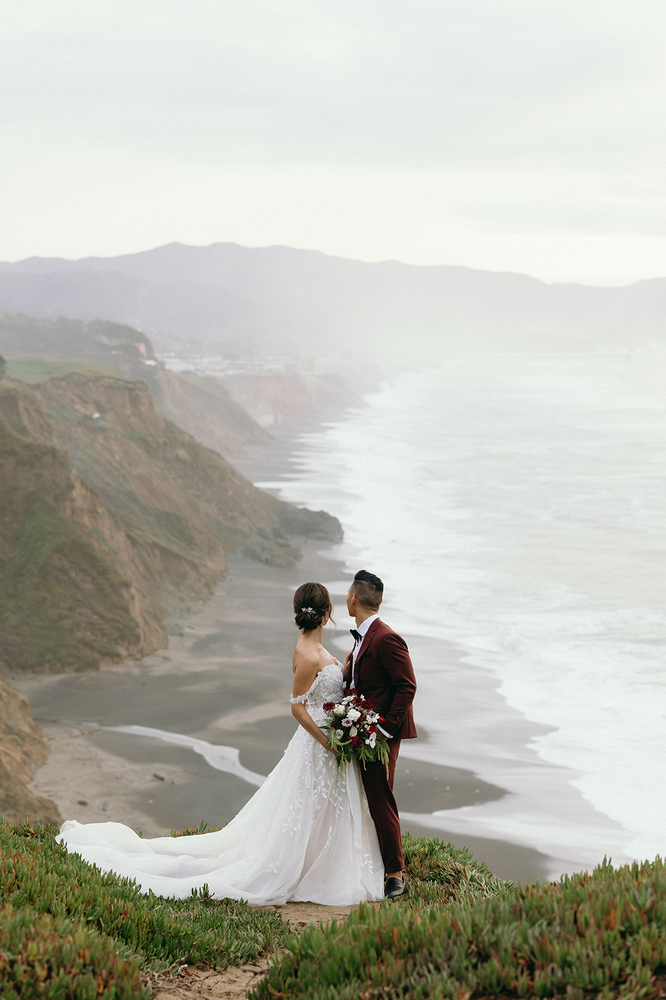
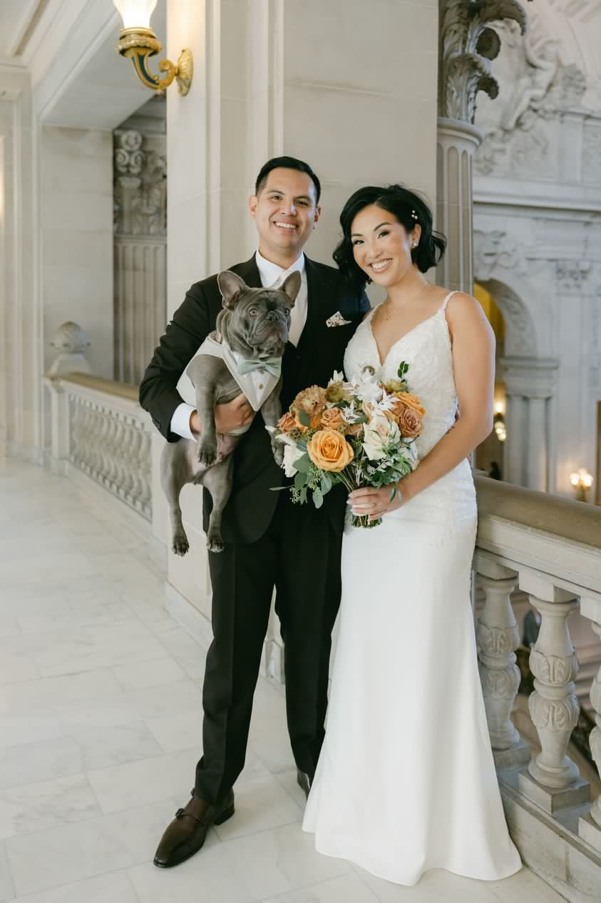
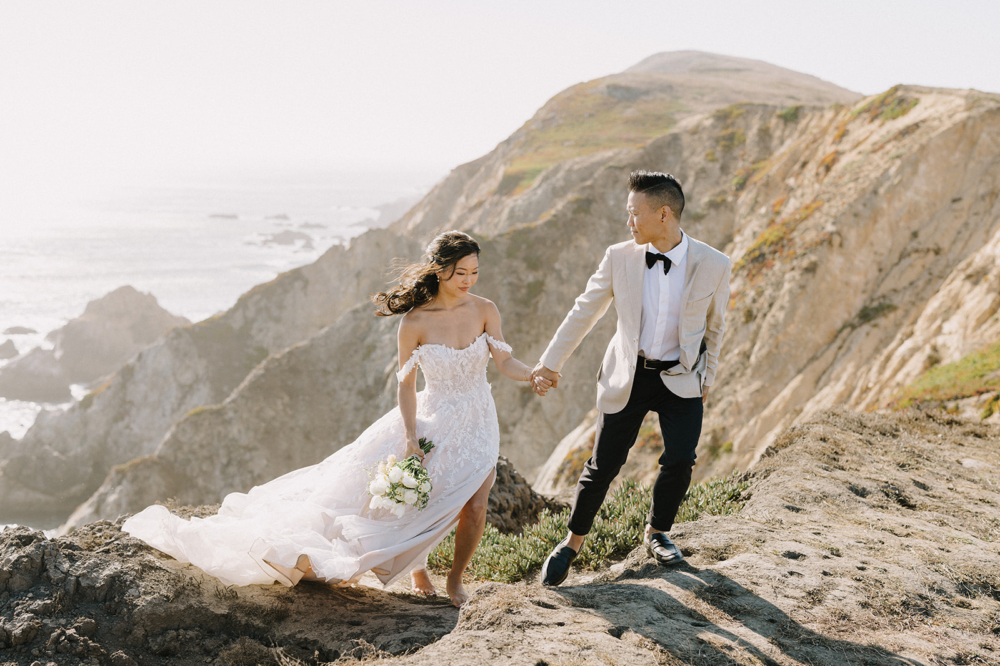
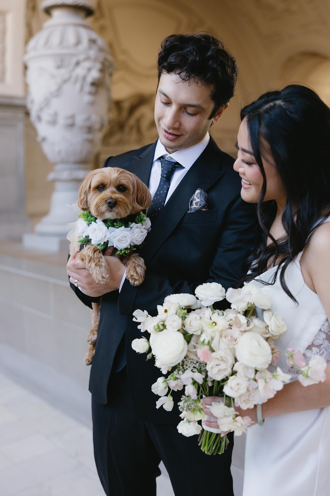

Florals by Thuy
Floral Arrangement
Modern, Ethereal, and Organic Florals
1 / 6

Christine Ngoc Nguyen
2 / 6

Courtney Yee Photography
3 / 6

Holly D Photos
4 / 6

Courtney Yee Photography
5 / 6

Nelli Nguyen Photography
6 / 6

Christine Ngoc Nguyen